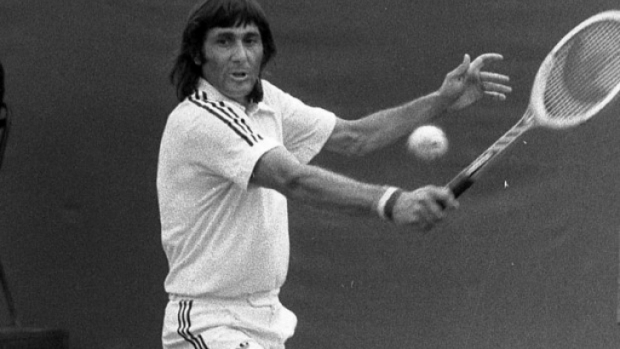

Totul despre Tenis
Legende ale tenisului romanesc
Ilie Năstase
Ilie Năstase (n. 19 iulie 1946, București) este un fost jucător profesionist de tenis de câmp și unul dintre cei mai importanți jucători de tenis ai anilor 1970, fiind numărul unu mondial de două ori, în 1972 și 1973.Printre cele 57 de titluri la simplu, pe care Ilie Năstase le-a câștigat de-a lungul carierei sale, se numără și US Open în 1972, respectiv Roland Garros în 1973. .Mai mutlte aici..
Ion Tiriac
on Țiriac (n. 9 mai 1939, Brașov), este un fost jucător profesionist de tenis român, jucător de hochei, și actualmente un influent om de afaceri în Germania și România.Mai mutlte aici..
Simona Halep
Simona Halep (n. 27 septembrie 1991, Constanța) este o jucătoare profesionistă de tenis din România, aflată actualmente pe locul 5 mondial. Halep a câștigat de-a lungul carierei unsprezece turnee WTA la simplu (șase în 2013, două în 2014 și trei în 2015), dintre care cel mai important este turneul Premier Mandatory de la Indian Wells. Următoarele premii ca importanță sunt cele de categorie Premier de la New Haven, Moscova, Doha, Dubai, dar și Turneul Campioanelor de la Sofia. Anterior, ea a mai jucat trei finale WTA (2010, 2011, 2012), toate pierdute. Este cunoscută pentru un stil agresiv de joc. Execută reverul cu ambele mâini.Mai mutlte aici..